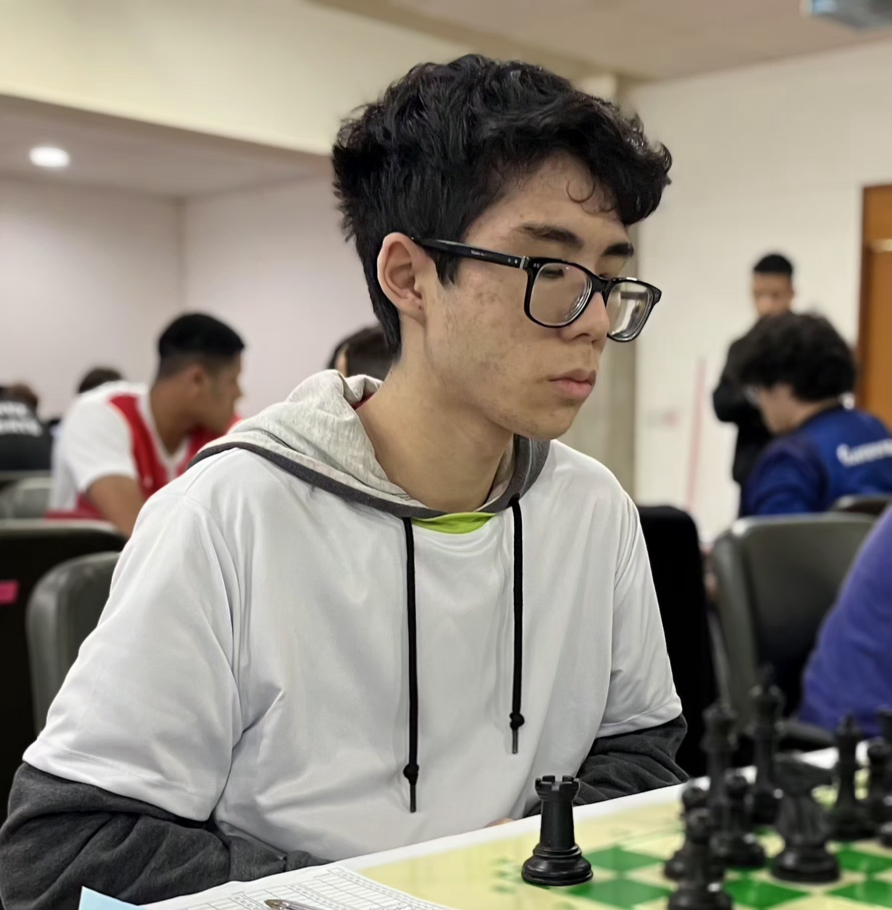

Olá, eu sou
Vinicius Guin
Em formação contínua: Estudante de Desenvolvimento Full-Stack dedicado à construção de uma base técnica sólida, por meio de estudo constante e prática orientada a projetos reais.
Sobre Mim

Sou estudante de Desenvolvimento de Software Multiplataforma, com foco em tecnologias full-stack. Dedico-me ao estudo contínuo de novas ferramentas e à aplicação prática desses conhecimentos no desenvolvimento de projetos.
Meu objetivo atual é consolidar os fundamentos abordados ao longo da graduação antes de avançar para tecnologias e ferramentas mais avançadas.
Fora da programação, sou enxadrista, conquistei títulos em campeonatos nacionais, atualmente disputo campeonatos regionais e locais. A prática do xadrez desenvolveu meu raciocínio estratégico, disciplina e capacidade de tomada de decisão, competências que aplico na resolução de problemas.
Objetivos & Áreas de Interesse
Busco uma oportunidade de estágio na área de desenvolvimento Full-Stack, com interesse particular em aprofundar conhecimentos em Cibersegurança.
Conhecimentos Técnicos
Cursos & Certificações
Certificate EducationFirst Level 16 - Upper Advanced - CEFR Level C2 - 10 de Outubro de 2024
Certificado de Git oferecido pelo Cursa - 12 de Fevereiro de 2026
Certificado ITE 7.01 oferecido pelo Cisco Networking Academy - 18 de Julho de 2026
Formação Acadêmica
- E.E. Profª Amância Dias Sampaio: Ensino médio completo — 2025
- FATEC: Desenvolvimento de Software Multiplataforma — 2º Semestre
Idiomas
- Português: Nativo
- Espanhol: Nível Avançado
- Inglês: Nível Intermediário
- Japonês: Nível Iniciante
Hobbies & Interesses
Xadrez, aprendizado contínuo, desenho, jogos de lógica e Cibersegurança.
Projetos Desenvolvidos
Jornada de Estudos
Fundamentos de HTML, CSS e JavaScript
Primeiro contato com programação ainda no Ensino Médio, através de HTML, CSS e JavaScript, o que despertou o interesse pela área de Tecnologia da Informação.
Aprofundamento em Desenvolvimento Web e Versionamento
Aprofundamento em HTML, CSS e JavaScript, controle de versão com Git e elaboração de documentação técnica de projetos.
TypeScript, Docker e Aprofundamento Técnico
Estudo de novas tecnologias, incluindo TypeScript e Docker, com foco na consolidação de conhecimentos técnicos.
Próxima Etapa
Novos conteúdos serão adicionados conforme o avanço da formação acadêmica.
Entre em Contato
Apenas redes profissionais são divulgadas — e-mail e telefone não são informados publicamente nesta página.